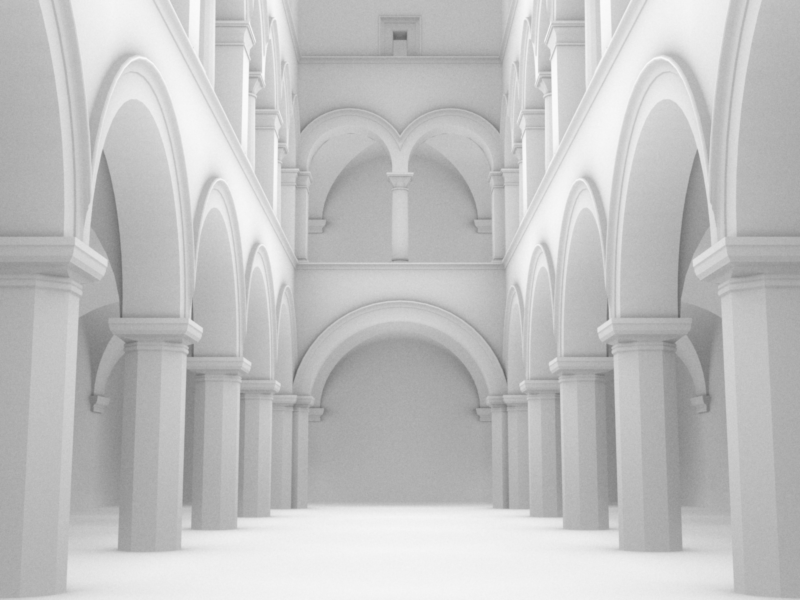
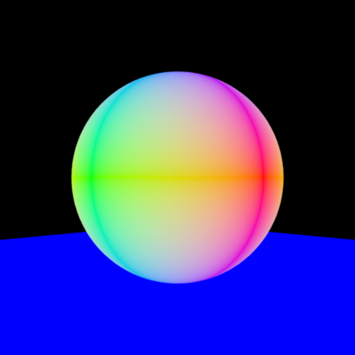
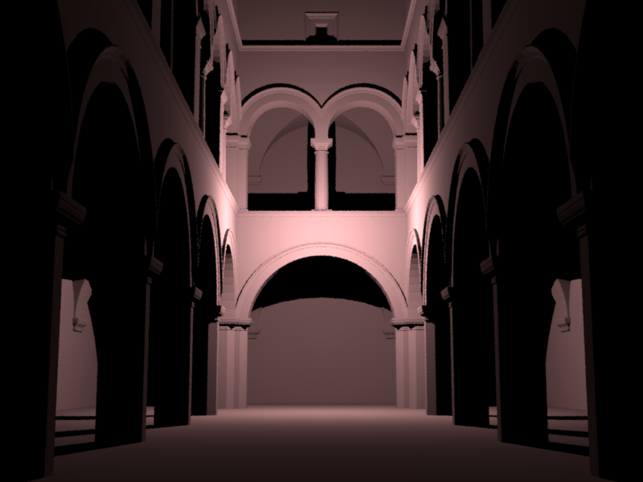
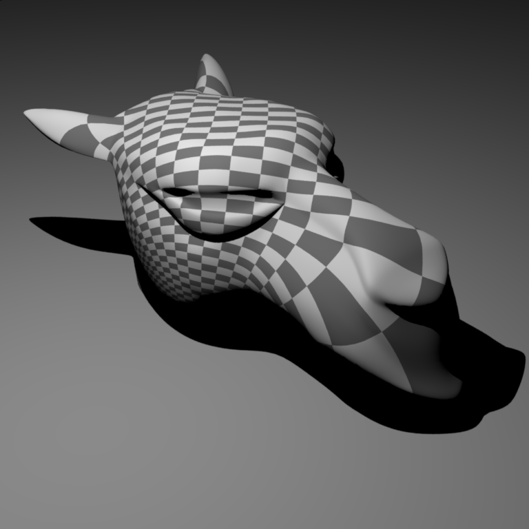
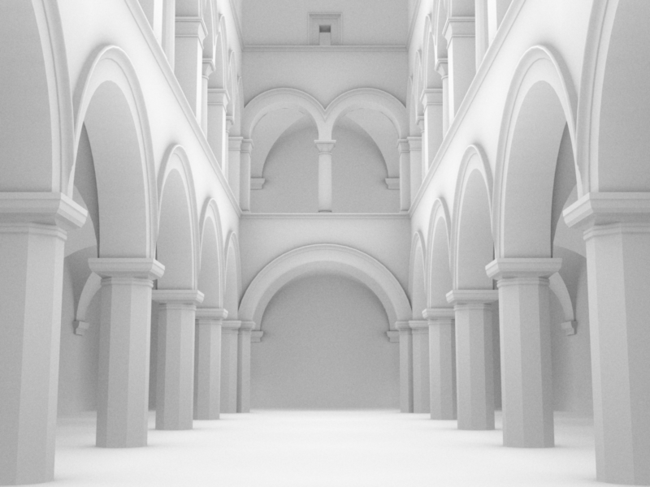
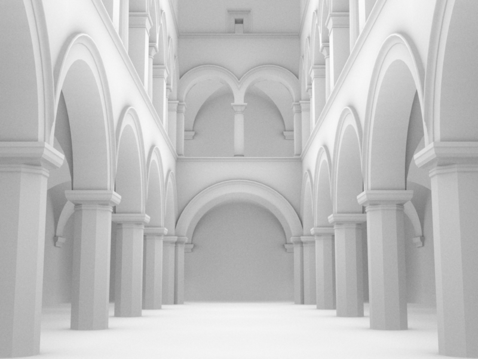
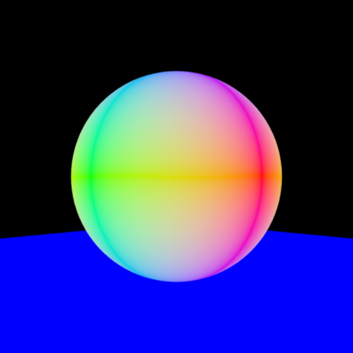
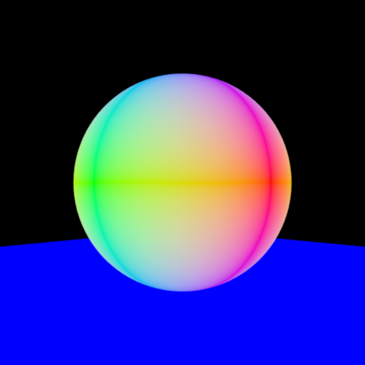
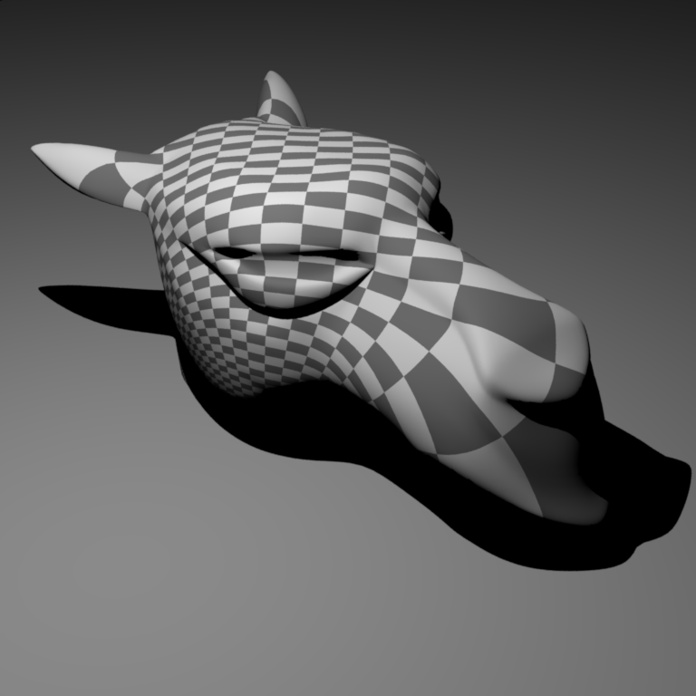
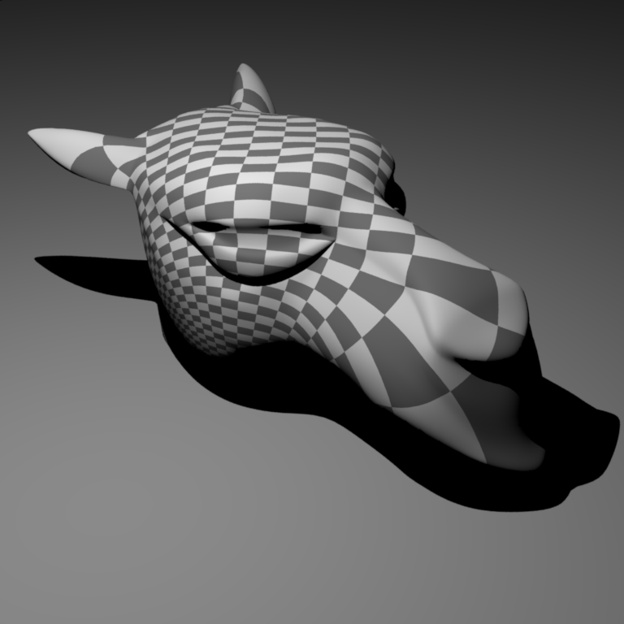

**Homework 1 - Getting Started**
Student Name: Tao Zhang
Legi Number: 23-955-511
(Note: please read the [supplementary](#supplementary) section first before working on this report.)
# Part 1: Normal Integrator
**Time spent on this task: 0.25h**
**Describe your implementation of Normal Integrator.**
Initialize an Intersection its to store information of the ray intersection if
there is any object intersected with the ray. To determine this we use scene->rayIntersect(ray, its),
if there is no intersection then simply return black color. Otherwise, we return the color which has the same value
as the component-wise absolute value of the shading normal of the intersection point, which is done by
access its.shFrame.n.cwiseAbs(), and convert it to Color3f type.
**Shading Normal Comparison: Ajax**
# Part 2: Average Visibility Integrator
**Time spent on this task: 1h**
**Describe your implementation of Average Visibility Integrator.**
First we shoot out a ray from the camera to the scene, and check if there is any intersection with the scene, just
as we did in the previous part. If there is no intersection, we return white color, as the background color.
Otherwise, from the intersection point we shoot out a random ray with direction
sampled from the hemisphere indicated by the
shading normal. We then check if this ray intersects with any object in the scene, if there is no intersection,
meaning that the ray is not blocked by any object, so the ray is in a sense visible, so we return white color.
If there is intersection, we return black color, as the ray is blocked by some object, meaning it is not visible.
We repeat this process for many many times, and the average visibility will eventually be rendered by nori.
The first rendered image I got is much dimmer than the reference image, and I found out that it is because in the
secondary ray I did
not use the m_length specified by the .xml file, but instead I used Infinity
as the maxt, which is maximum distance the ray can travel. And setting maxt=Infinity caused
some rays were eventually occluded, so not visible, so the average visibility is much lower than the reference.
**Average Visibility Comparison: Ajax**
**Average Visibility Comparison: Sponza**

# Part 3: Analytic Sphere Shape
**Time spent on this task: 3h**
**Describe your implementation of Sphere and two functions.**
rayIntersect: Let the $O$ be the origin of the ray, $D$ be the direction of the ray,
$P$ be the center of the sphere, $r$ be the radius of the sphere.
Then the ray-sphere intersection can be written as: $(O+Dt - P)^2 = r^2$, which is $At^2+Bt+C=0$ where
$A = |D|^2$, $B = 2D\cdot(O-P)$, $C = |O-P|^2-r^2$. The determinant of this quadratic equation is
$\Delta = B^2-4AC$, if $\Delta < 0$, then return false as there is no root thus no intersection.
Otherwise, let $t_1 <= t_2$ be the 2 roots of the quadratic equation with variable $t$, where
$t_1=\frac{-B-\sqrt{\Delta}}{2A}$ and $t_2=\frac{-B+\sqrt{\Delta}}{2A}$. Note that we want the smallest
positive intersection value $t$, so we first check if $mint<= t_1 <=maxt$, if so then set $t=t_1$ and we find
the intersection! Otherwise, we check if $mint<= t_2 <=maxt$, if so then set $t=t_2$ and we find the intersection!
Otherwise, there is no intersection, so return false.
setHitInformation: Here we basically filling the details of the intersection point via
its. As we would find its.t in rayIntersect, we set the intersection point
its.p = ray.o + ray.d * its.t, the shadow frame is defined by the directional vector from the
center of sphere to the intersection point, and the geometric frame is the same because the sphere is analytic.
The UV coordinate mapping function is defined as $f(x,y,z)=(u, v)=(0.5 + \frac{arctan2(d_z, d_x)}{2\pi},
0.5 + \frac{arcsin(d_y)}{pi})$, where $d$ is the directional vector from the intersection point to the center of the
sphere. Reference: [UV mapping](https://en.wikipedia.org/wiki/UV_mapping).
**Sphere Analytic vs Mesh Comparison**

# Part 4: Direct Illumination Integrator
**Time spent on this task: 15h**
**Describe your implementation of Direct Illumination Integrator.**
pointlight.cpp: For sample(), because it is point light,
we cannot actually sample anything, which means the lRec is entirely determined
by the position and the power of the point light. eval returns the irradiance
of the point light, which is $\frac{Power}{4\pi r^2}$, where $r$ is the distance between the
point light and the shading point. For pdf, we return 0 because we cannot sample
anything from a point light, but here to pass the test we return 1.
direct.cpp: For Li(), we first check if the ray intersects with the scene,
if not then return black color. Otherwise, we loop through all the lights in the scene, and for each
we calculate the radiance by simply times up the Irradiance, the BSDF, and the cosine between
shading normal and the light direction (pointing outwards from the shading point). We then sum
up all the radiance from all the lights, and return the sum as the surface radiance of
the shading point.
The difficult point of this task is to understand how everything works, and even how to start.
I ended up learning a lot from the textbook
Foundamentals of Computer Graphics,
by Steve Marschner & Peter Shirley
.
**Direct Illumination Comparison: Sponza**

# Part 5: Texture Mapping
**Time spent on this task: 4h**
**Describe your implementation of texture mapping.**
We first sort of "normalize" uv by dividing it by m_scale, then deduct
it by m_delta to get the sort of the "relative" uv coordinate. Then we take
the floor value of it to get the corresponding (i,j) pair saying this pixel should have the
same value as the (i,j)th tile of the checkerboard. Note that the (i,j)th tile is in
m_value1 if and only if i+j is even, otherwise it is in m_value2.
The difficult point of this task is to understand how the uv coordinate works, and
more specifically what is the relationship between uv, m_delta,
m_scale and the corresponding tile of the checkerboard.
**Checkerboard Comparison: Sphere**
**Checkerboard Comparison: Mesh**

# Feedback
**Use this section to provide feedback about this assignment (each task, the handout, Nori, etc.). We appreciate your opinions to help improve future homeworks and projects.**
I hope the instrcutions can be more clear and detailed, at least do not be so misleading, as
I spent a lot of time struggling but most of the struggle is not necessary at all. But anyway,
I learned a lot from it, and had fun with it!
# Supplementary
* For each task, please note down the time you spent working through it and use at least a few sentences to describe your implementation. If applicable, also report the problems you encounter (e.g. whether or how it's solved, what is the difficult part).
* Please let us know to what extent your code is working (e.g. you only managed to work through part of this assignment, or your solution doesn't operate as expected in some corner cases). We encourage you to share your thinking process, and points will be granted based on your description even if the code is not 100% functioning.
* Nori generates both EXR and PNG format output. Please use PNG for image comparison in the report.
* This report template uses [Markdeep](https://casual-effects.com/markdeep/), which supports Markdown syntax in HTML file. For example usage, please refer to the [official demo document](https://casual-effects.com/markdeep/features.md.html).
* LaTeX is also supported for typing mathematical formulas:
$$
L_o(\mathbf{x}, \omega_o) = \int_{\Omega} L_i(\mathbf{x},\omega_i)\, f(\mathbf{x}, \omega_i, \omega_o)\, |\cos\theta_i|\, \mathrm{d}\omega_i
$$


 

 


 
